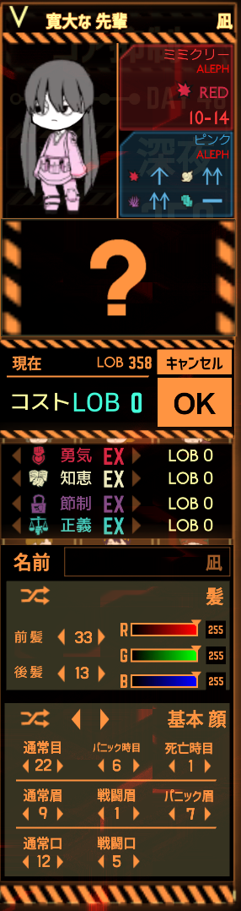

基本情報
| 年齢 | 18歳 |
|---|---|
| 身長 | 148cm |
| 体重 | 46.5kg |
| 誕生日 | 7月6日 |
| 性別 | 女性 |
| 種族 | 能力持ち新人類 |
| 出身 | 実力主義の世界 |
| 職業 | 冒険者 |
| 能力 | 宵闇を操りし者 |
性格・特徴
彼方とともにいろいろな世界を移り渡っている少女。
昔から暗殺ばかりを教えてもらっている影響で、戦闘以外が本当に苦手。
PMoon世界のL社に入社した時は、書類作業ができなくて、セフィラたちにしょっちゅう怒られていた。
別に頭が悪いわけではなく、実力主義の世界の最上位の学校に入学できてたため頭はいい。でも書類作業などの単調作業が苦手すぎる。
彼方への愛が本当に強く、彼方がすごい大好き。
彼女の武器はナイフであり、基本的に片手持ちだが極稀に両手に持って二刀流することもある。
また、魔素を用いた闇属性の魔術を使いこなすことができる。
どうやら光の種の影響で、EGOを発現できるみたいだ。
過去の事件で魔素が常時暴走しており、彼方が魔素を吸っている。彼方がいないと魔素の暴走で周囲に影響を与えながら苦しんで絶命してしまう。
背景・設定
大型暗殺組織である「死神」のトップ２から生まれた子供であり、当然のように暗殺の腕はかなり高かった。
実力主義の世界で「死神」が世界を乗っ取るため、「王を殺す」という任務を受け取り王に近づくために最上位の学校に入学したが、想像以上に暗殺能力を評価されず彼方・咲と同じ最底辺のクラスに送り込まれる。
一緒に過ごしていく中で彼方・咲との友情も芽生えてきたが、その時は「王を殺す」という任務を強く考えてた。
やがて、彼方のお陰で最上位のクラスに共に行くことができ、更に学校では王の護衛ミッションが始まった。
護衛ミッション最終日、最後の護衛は凪一人だけとなり絶好のチャンスだったところに彼方が来て、戦闘が始まる。
圧倒的な力を持つ彼方に勝てないことを悟りながらも、「王を殺す」ことに失敗すれば廃棄されることを知っていた凪は、極度の集中と高ぶった感情から「宵闇を操りし者」という能力を発現する。
能力を使ってかなり善戦するも最終的に彼方に敗北。その一部始終を見ていた「死神」は彼方・凪・王の殺害のために大軍を送り込む。
凪は自分を犠牲にすることで彼方を救おうとしたが、彼方に「キス」をされることで混乱し動かなくなった。
動かなくなった凪を抱えながら「死神」からの刺客を全滅させ「王の護衛」と「凪の救出」に成功した彼方は、クラスの仲間とともに学校に戻ることに成功する。
凪は彼方のキスを忘れることができなく、それ以降は「死神」を忘れ彼方にぞっこんになる。
その後彼方・咲・凪で実力主義の世界を変えることに成功し彼方は行ったものの、咲と凪は世界の復旧に力を入れた。
しかし、王がいなくなった影響で企業たちが遺物の強大な力を持ち出し、企業主体の世界が完成してしまう。
咲と凪は対抗したが、Wall社の懲戒部隊たちに阻まれ巨大都市「エニグマ」は完成してしまう。
エニグマで生きていた凪だったが、彼方が「C8x6N」の戦いで生死をさまよっていることを聞いた凪は、彼方を救うために「エニグマ」で彼方の残した果の欠片を集めたが、ユニオン「ガーディアンズ」との戦闘中に「宵闇を操りし者」の力が暴発。危機的な状態へと陥る。
咲が彼方を救うことに成功したが、凪を助ける手段はもう残されていなかった。
彼方は責任を持って凪を2つに分け、そのうちの「能力を持つが力の暴走を止めれない凪」として目を覚ました凪(冒険者)は最終的に彼方といろいろな世界を渡ることになった。
デザインメモ
かなり幼い顔つきでジト目。右目が青・左目が水色のオッドアイ。
髪は銀髪でてっぺんにアホ毛のあるツーサイドアップ。髪留めとして青いリボンを付けてる
服装は、ダボッとした黄色いパーカーに、首に無難な黒色のチョーカー、ズボンは黄緑色のショートパンツに灰色のスニーカー。
チョーカーをつけ始めたのは彼方と共にいるようになってからである。
R18は自由(基本どんなシチュでも別世界で存在したかもしれないため)。
R18Gはちょっと遠慮願いたい(ダメじゃないけど……ちょっと傷ついてるのは悲しいよね)。
イラスト

ロボトミ世界での凪